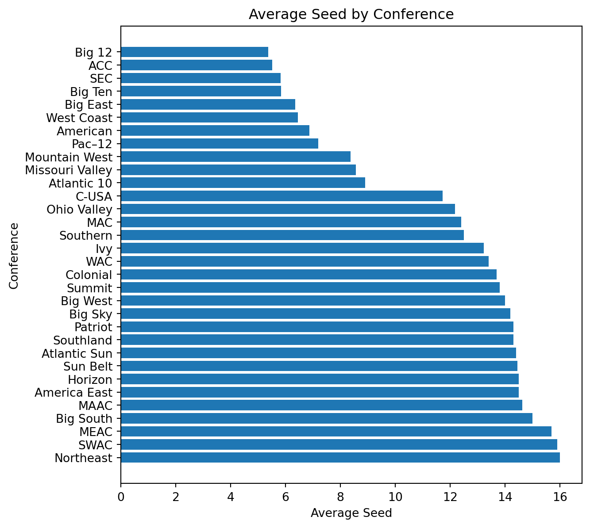

Every year I watch the March Madness tournament with my dad, always filling out brackets to see how well we could predict the tournament. All across the country, people fill out brackets doing the same. This year roughly 20 million people filled out a bracket. To this date not a single person has filled out a perfect bracket, with most, if not all, brackets predicting a game wrong before the end of the first round. There are over 2.1 billion possible bracket combinations, 10 times the number of brackets that were filled out this year. Below is a video from the official March Madness YouTube Channel outlining how every bracket busted in 2023.
As a result, I created this project to take a look into what makes a team qualified to make the NCAA College Basketball Tournament, as well as what teams a simulation model believes will do well in this year’s tournament.
Data Collection
For this project, all of the data was collected using web scraping. There are two main datasets were created. The first data set includes team statistics from the years 2012-2022 (except for 2019-20 due to the shortened season as a result of the COVID-19 pandemic). The second data set contained game-level data from the 2022-23 season, containing each team’s average points scored, standard deviation of points scored, and average points against. The websites scraped were TidyX (2021), kenpom (2023), Wikipedia (2012-22), TeamRankings (2012-22), and CBS (2022-23). .
The first of the two data sets focuses on the historical side of the tournament. Using the sample method from pandas, five random rows are shown below. The dataset is populated with every team that has made the March Madness Tournament in the past 10 years. The dimensions of this data set were 680 rows by 30 columns, providing a wide arrange of statistics to look at.
Code
import pandas as pdfullstats = pd.read_csv("fullstats.csv")fullstats.sample(n=5)
Seed
School
Conference
Record
Overall Seed
Berth type
PPG
OppPPG
year
Rk
...
AdjEM Rank
OppO
OppO Rank
OppD
OppD Rank
NCSOS_AdjEM
NCSOS_AdjEM Rank
State
Wins
Losses
253
8.0
Wisconsin
Big Ten
25–9
29.0
At-Large
72.4
62.4
2017
21
...
29
110.6
22
100.6
38
-1.29
193
WI
25
9
471
15.0
Belmont
Ohio Valley
22–10
60.0
Automatic
73.6
70.4
2015
142
...
225
102.4
250
105.7
222
-1.68
209
TN
22
10
171
4.0
Arizona
Pac–12
27–7
16.0
Automatic
80.5
71.7
2018
28
...
68
108.5
65
102.5
73
2.51
86
AZ
27
7
78
16.0
Vermont
America East
23–11
66.0
Automatic
67.1
60.9
2012
118
...
296
99.1
319
104.6
232
-1.55
201
VT
23
11
226
4.0
Michigan
Big Ten
24–9
13.0
At-Large
66.5
62.3
2012
22
...
2
109.0
2
98.3
4
-0.11
161
MI
24
9
5 rows × 30 columns
The second of the two created data sets focused on this year’s tournament. This data set was much smaller than fullstats, but originally had roughly 5,500 rows before the data was prepared. As you can see below this data set shows 3 statistics for each team in 2023. Every Division 1 college team has a row, with the dimensions being 367 rows by 3 columns.
Code
import pandas as pdAllStats = pd.read_csv("AllStats.csv")AllStats.head()
Team
Points For
Standard Deviation
Points Against
0
Abilene Chr.
76.250000
14.658141
71.142857
1
Air Force
67.033333
11.909091
66.833333
2
Akron
73.500000
11.857632
65.466667
3
Alabama
83.344828
13.112905
69.103448
4
Alabama A&M
69.500000
10.199855
71.535714
Results
Which teams made March Madness?
To look into the past teams who have made the tournament I opted to look at the previous 10 tournaments. Some of the statistics we will be looking at include Wins, Strength of Schedule, and Adjusted Rankings amongst others.
Figure 1 below shows us which statistic, Wins or Strength of Schedule, is more important to earn higher seeds in March Madness. Obviously, teams who played the most difficult teams and won those games earned the best seeds. What is more interesting is the difference between teams with higher win counts and lower strength of schedules versus the opposite. It is apparent that strength of schedule is more impactful than total wins, as some purple dots can be found in the bottom left of the scatter plot, but none are really found on the right of the plot at all.
Code
import pandas as pdimport matplotlib.pyplot as pltfullstats = pd.read_csv("fullstats.csv")# Create scatter plotplt.scatter(fullstats["AdjEM Rank"], fullstats.Wins, c = fullstats.Seed)# Add axis labels and titleplt.xlabel('Strength of Schedule Rank')plt.ylabel('Wins')plt.title('Seed by Wins and Strength of Schedule')# Create and format the colorbarcbar = plt.colorbar()cbar.ax.invert_yaxis() # invert the colorbar scale# Display the plotplt.show()# While it may have been obvious already, this chart shows that teams must have a good combination between wins and strength# of schedule to earn a high seed, if you do not play other good teams it is unlikely you earn a top seed.
Figure 1: Scatterplot of Seed determined by Wins and Strength of Schedule
Figure 2 shows the distribution of March Madness by the states in which the school is located. Texas leads the pack, having a plethora of schools eligible for March Madness. More of a surprise to those who are not fans of college basketball, North Carolina ranks second amongst all states as it has perennial favorites, such as Duke, who make the tournament almost every year. Sorry to anyone who lives in Maine, New Hampshire, or Alaska as not a single team from those states has made one of the past ten March Madness Tournaments.
Code
import pandas as pdimport plotly.express as pxfullstats = pd.read_csv("fullstats.csv")# Group by state and count the occurrences of each two-letter abbreviationstate_counts = fullstats['State'].value_counts().reset_index(name='count').rename(columns={'index': 'state'})# Create a choropleth mapfig = px.choropleth(state_counts, locations='state', locationmode='USA-states', color='count', scope='usa', color_continuous_scale='YlOrRd')# Set title and colorbar labelfig.update_layout(title_text='March Madness Teams by State')fig.update_coloraxes(colorbar_title='# of Teams')# Show the plotfig.show()# The field seems to be made up of mainly teams from Texas, California, Virginia, New York, North Carolia and Ohio. The two# states that stand the most are Texas and North Carolina as Texas features a lot of Power 5 schools, while North Carolina # is top heavy having perennial favorites such as North Carolina and Duke that make the field almost every year.
Figure 2: Map of March Madness Teams by State (2012-2022)
Figure 3 shows the distribution of teams in March Madness by the conference in which they play in. The largest piece of the pie went to the 1-bid conferences, which are the conferences that sent one team each year, the minimum. When looking at Figure 2 these conferences make sense to be the top team senders as they are mainly located on the east coast, in the midwest, and in Texas.
Code
import pandas as pdMMteams = pd.read_csv("MMteams.csv")import matplotlib.pyplot as plt# Counts how many occurences of each conference are found in the datasetn =15conference_counts = MMteams['Conference'].value_counts()top_conferences = conference_counts[:n].index.tolist()MMteams.loc[~MMteams['Conference'].isin(top_conferences), 'Conference'] ='1 Bid Conferences'conference_counts = MMteams['Conference'].value_counts()# Plots the resulting Pie Chartplt.figure(figsize=(8,8))plt.pie(conference_counts, labels=conference_counts.index, autopct='%1.1f%%')plt.title('Conference Distribution')plt.show()# The 1-bid Conferences were the conferences in which between 2012 and 2022 only had one team each year. An interesting note# is that the "Power 5" were not the top 5 conferences on the list as the SEC and the Pac-12 both fell underneath the Big # East in this chart
Figure 3: Pie Chart of March Madness teams by Conference
Another look into the difference between conferences would be to look at each conference’s average seed. Figure 4 shows us three clear groups of teams. The best conferences make up the highest seeded group. Some outliers do exist however as the West Coast Conference and the American Athletic Conference are heavily weighted by one team, Gonzaga and Houston respectively. The teams at the very bottom of this graph are also the teams that made up the 1-Bid Conferences in Figure 3.
Code
import sysifnot sys.warnoptions:import warnings warnings.simplefilter("ignore")import pandas as pdMMteams = pd.read_csv("MMteams.csv")import matplotlib.pyplot as plt# Group by year and calculate the mean of PPG and OppPPGMMteams['Seed'] = MMteams['Seed'].astype(str)# Removes all *'s and #'s from the Seed Column, and makes Seed a FloatMMteams['Seed'] = MMteams['Seed'].str.replace('*', '')MMteams['Seed'] = MMteams['Seed'].str.replace('#', '')MMteams['Seed'] = MMteams['Seed'].astype(float)# Plot the dual bar chartavg_seed = MMteams.groupby('Conference')['Seed'].mean()avg_seed_sorted = avg_seed.sort_values(ascending=False)# Create a bar chart of the average seed by conferencefig, ax = plt.subplots(figsize=(10, 10))# plot the bar chartax.barh(avg_seed_sorted.index, avg_seed_sorted.values)# customize the chartax.set_title('Average Seed by Conference')ax.set_xlabel('Average Seed')ax.set_ylabel('Conference')plt.show()# There is an obvious jump between the Atlantic 10 and Conference USA on this chart. The reason is likely because the # conferences below the A10 usually get one sometimes two teams into the tournament, and since their teams are not as good# as the other conferences their teams struggle to gain a high enough Strength of Schedule to both make the tournament,# as well as earning top seeds

Figure 4: Average Seed of Conferences
Which teams will do well this year?
To answer this question I decided to use a Monte Carlo Simulation on the Tournament. What it is in theory is taking two teams and simulating any given amount of games between them. For this project each matchup in March Marched will be simulated 10,000 times. I used each team’s average points scored, the standard deviation of points scored, and average points against to help predict both teams’ points in each of the 10,000 games. One team’s score is calculated using their points scored and their opponents’ points against.
For example, if I wanted to simulate the National Championship game from this year (UConn vs San Diego State) I would input both of their names into the code.
Displayed in Figure 5 is the resulting simulation between UConn and San Diego State. Similarly to public opinion, UConn was picked by the simulation model to win the National Championship. While the model was more modest than the public (UConn was 7.5 point favorites), the difference in wins was significant enough to conclude that the model would choose UConn in every simulation.
Code
# This is where the teams are chosen for the simulationimport pandas as pdimport mathfrom scipy.stats import normfrom numpy.random import uniformimport matplotlib.pyplot as pltimport numpy as npAllStats = pd.read_csv("AllStats.csv")AllStatsteam1 ="UConn"team2 ="San Diego St"# Assigns variables to team 1Team1PF = AllStats.loc[AllStats['Team'] == team1, 'Points For'].values[0]Team1PA = AllStats.loc[AllStats['Team'] == team1, 'Points Against'].values[0]Team1SDPF = AllStats.loc[AllStats['Team'] == team1, 'Standard Deviation'].values[0]# Assigns variables to team 2Team2PF = AllStats.loc[AllStats['Team'] == team2, 'Points For'].values[0]Team2PA = AllStats.loc[AllStats['Team'] == team2, 'Points Against'].values[0]Team2SDPF = AllStats.loc[AllStats['Team'] == team2, 'Standard Deviation'].values[0]# Creates Adjusted points for both teams based on values from each teamTeam1ADJ = math.sqrt(Team1PF * Team2PA)Team2ADJ = math.sqrt(Team2PF * Team1PA)# Generates one score for team 1norm.ppf( uniform(0, 1), loc=Team1ADJ, scale=Team1SDPF)# Generates one score for team 2norm.ppf( uniform(0, 1), loc=Team2ADJ, scale=Team2SDPF)# Names variables used for simulationN =10000outcome = np.empty(N, dtype='object')# Runs the simulation 10,000 timesfor i inrange(N): d = (np.random.normal(loc=Team1ADJ, scale=Team1SDPF) - np.random.normal(loc=Team2ADJ, scale=Team2SDPF)) d = team1 if d >0else team2 outcome[i] = d# Makes variables to help with visualizationoutcome_series = pd.Series(outcome)table = outcome_series.value_counts()rel_freq = table / table.sum()# Plots the relative frequencies as a bar chartplt.bar(x=rel_freq.index, height=rel_freq.values)# Plots Bar Graph and exact values for the Monte Carlo Simulationprint(table)plt.show()
UConn 5541
San Diego St 4459
dtype: int64
Figure 5: Simulated Wins for UConn and San Diego State
To answer the question of which teams the model predicts to do well I simulated each game of the March Madness tournament, the NIT, and the six conferences that have sent the most teams over the past 10 years (see Figure 3). What was found is that the conference tournaments were the most accurately predicted, followed by March Madness, then the NIT. The accuracies for each grouping are shown in Figure 6
Code
values = [37/63, 15/31, 52/70]labels = ['MM', 'NIT', 'Conference Tournaments']fig, ax = plt.subplots()ax.bar(labels, values)ax.set_ylabel('Accuracy')ax.set_xlabel('Tournament')ax.set_title('Accuracy of Model by Tournament Projected')plt.show()
Figure 6: Accuracies of Tournaments as Predicted by Simulation
When looking at which tournaments were predicted the best the shortcomings of the model were more evident than ever. Since the conference tournaments were between teams playing similar schedules, the difference of strength of schedule was certainly affecting the model. Big underdogs like Montana State were predicted to beat top-ranked teams such as Kansas State and Kentucky, while the NIT had lower-rated teams winning at extremely high rates. The issue is that just looking at box scores ignores how rigorous the team’s schedule was. If there was a way to take strength of schedule or conference into account the accuracy of the model for March Madness and the NIT would likely increase.
Bracket Generator
One of the last features of this project was the ability to generate an entire bracket with one click. Below is the resulting bracket when it simulates the entire tournament. Each game in this bracket was simulated 10,000 times, and yet each time it runs a slightly different bracket will be generated. One of the features of the code is that the number of games played can be specified before the simulation. So if I wanted to make a bracket that simulated each game once I could by simply changing the number in the function call.
Even though each game was simulated 10,000 times that will not stop the bracket below from being different than the one it generated prior to the start of March Madness. Although the amount of simulations is meant to reduce variability, it does not remove it completely. Games that are predict each team with close to half the wins could fall either way, leading to an entirely new bracket.
This feature, along with the single game simulation, is only currently for the 2023 season. All that would be necessary for this code to work with any other season is the list of the teams competing in the tournament. Along with that, the AllStats equivalent for that year would be needed, which is also easily attainable due to the earlier web scraping work that is replicable for any season on the CBS website.
Future Work
There are two main things that I would like to add to this project. Firstly, as mentioned previously the ability of the model to judge strength of schedule is currently not up to par. Adding something to account for the different schedules played in college basketball would go a long way in improving this model. A Second addition would be to add a score to the bracket generator. This would be accomplished by awarding points if the simulator chose the correct team to advance each round. Generating the bracket would then not only produce a new bracket but also how well the bracket did when compared to what actually happened. On top of the fun part of that addition, it would also be very practical. When adjusting the model I would be able to also run tests to see if the average score of the model went up or down as a result of the change, intertwining both ends of the future work of this project.
kenpom. 2023. 2023 Pomeroy College Basketball Ratings.
TeamRankings. 2012-22. “NCAA BB Team Points Per Game,” 2012-22.
TidyX. 2021. “TidyX Episode 48 | NBA Game Simulation, Purrr, and Base r Distribution Functions.”
Wikipedia. 2012-22. “NCAA Division i Men’s Basketball Tournament,” 2012-22.
Source Code
---title: "March Madness Simulation"subtitle: "A computer's attempt to make a bracket"author: "Joseph Bellani"bibliography: references.bibnumber-sections: falseformat: html: theme: lux rendering: default code-fold: true code-tools: true pdf: defaultjupyter: python3toc: truetoc-depth: 2---Every year I watch the March Madness tournament with my dad, always filling out brackets to see how well we could predict the tournament. All across the country, people fill out brackets doing the same. This year roughly 20 million people filled out a bracket. To this date not a single person has filled out a perfect bracket, with most, if not all, brackets predicting a game wrong before the end of the first round. There are over 2.1 billion possible bracket combinations, 10 times the number of brackets that were filled out this year. Below is a video from the official March Madness YouTube Channel outlining how every bracket busted in 2023.{{< video https://www.youtube.com/watch?v=1yU3FM90cts&t=8s >}}As a result, I created this project to take a look into what makes a team qualified to make the NCAA College Basketball Tournament, as well as what teams a simulation model believes will do well in this year's tournament.# Data CollectionFor this project, all of the data was collected using web scraping. There are two main datasets were created. The first data set includes team statistics from the years 2012-2022 (except for 2019-20 due to the shortened season as a result of the COVID-19 pandemic). The second data set contained game-level data from the 2022-23 season, containing each team’s average points scored, standard deviation of points scored, and average points against. The websites scraped were @tidyX, @kenpom, @wikipedia, @teamrankings, and @CBS..The first of the two data sets focuses on the historical side of the tournament. Using the sample method from pandas, five random rows are shown below. The dataset is populated with every team that has made the March Madness Tournament in the past 10 years. The dimensions of this data set were 680 rows by 30 columns, providing a wide arrange of statistics to look at. ```{python}import pandas as pdfullstats = pd.read_csv("fullstats.csv")fullstats.sample(n=5)```The second of the two created data sets focused on this year's tournament. This data set was much smaller than fullstats, but originally had roughly 5,500 rows before the data was prepared. As you can see below this data set shows 3 statistics for each team in 2023. Every Division 1 college team has a row, with the dimensions being 367 rows by 3 columns.```{python}import pandas as pdAllStats = pd.read_csv("AllStats.csv")AllStats.head()```# Results## Which teams made March Madness?To look into the past teams who have made the tournament I opted to look at the previous 10 tournaments. Some of the statistics we will be looking at include Wins, Strength of Schedule, and Adjusted Rankings amongst others.@fig-seed below shows us which statistic, Wins or Strength of Schedule, is more important to earn higher seeds in March Madness. Obviously, teams who played the most difficult teams and won those games earned the best seeds. What is more interesting is the difference between teams with higher win counts and lower strength of schedules versus the opposite. It is apparent that strength of schedule is more impactful than total wins, as some purple dots can be found in the bottom left of the scatter plot, but none are really found on the right of the plot at all.```{python}#| label: fig-seed#| fig-cap: "Scatterplot of Seed determined by Wins and Strength of Schedule"import pandas as pdimport matplotlib.pyplot as pltfullstats = pd.read_csv("fullstats.csv")# Create scatter plotplt.scatter(fullstats["AdjEM Rank"], fullstats.Wins, c = fullstats.Seed)# Add axis labels and titleplt.xlabel('Strength of Schedule Rank')plt.ylabel('Wins')plt.title('Seed by Wins and Strength of Schedule')# Create and format the colorbarcbar = plt.colorbar()cbar.ax.invert_yaxis() # invert the colorbar scale# Display the plotplt.show()# While it may have been obvious already, this chart shows that teams must have a good combination between wins and strength# of schedule to earn a high seed, if you do not play other good teams it is unlikely you earn a top seed.```@fig-map shows the distribution of March Madness by the states in which the school is located. Texas leads the pack, having a plethora of schools eligible for March Madness. More of a surprise to those who are not fans of college basketball, North Carolina ranks second amongst all states as it has perennial favorites, such as Duke, who make the tournament almost every year. Sorry to anyone who lives in Maine, New Hampshire, or Alaska as not a single team from those states has made one of the past ten March Madness Tournaments.```{python}#| label: fig-map#| fig-cap: "Map of March Madness Teams by State (2012-2022)"import pandas as pdimport plotly.express as pxfullstats = pd.read_csv("fullstats.csv")# Group by state and count the occurrences of each two-letter abbreviationstate_counts = fullstats['State'].value_counts().reset_index(name='count').rename(columns={'index': 'state'})# Create a choropleth mapfig = px.choropleth(state_counts, locations='state', locationmode='USA-states', color='count', scope='usa', color_continuous_scale='YlOrRd')# Set title and colorbar labelfig.update_layout(title_text='March Madness Teams by State')fig.update_coloraxes(colorbar_title='# of Teams')# Show the plotfig.show()# The field seems to be made up of mainly teams from Texas, California, Virginia, New York, North Carolia and Ohio. The two# states that stand the most are Texas and North Carolina as Texas features a lot of Power 5 schools, while North Carolina # is top heavy having perennial favorites such as North Carolina and Duke that make the field almost every year.```@fig-piechart shows the distribution of teams in March Madness by the conference in which they play in. The largest piece of the pie went to the 1-bid conferences, which are the conferences that sent one team each year, the minimum. When looking at @fig-map these conferences make sense to be the top team senders as they are mainly located on the east coast, in the midwest, and in Texas.```{python}#| label: fig-piechart#| fig-cap: "Pie Chart of March Madness teams by Conference"import pandas as pdMMteams = pd.read_csv("MMteams.csv")import matplotlib.pyplot as plt# Counts how many occurences of each conference are found in the datasetn =15conference_counts = MMteams['Conference'].value_counts()top_conferences = conference_counts[:n].index.tolist()MMteams.loc[~MMteams['Conference'].isin(top_conferences), 'Conference'] ='1 Bid Conferences'conference_counts = MMteams['Conference'].value_counts()# Plots the resulting Pie Chartplt.figure(figsize=(8,8))plt.pie(conference_counts, labels=conference_counts.index, autopct='%1.1f%%')plt.title('Conference Distribution')plt.show()# The 1-bid Conferences were the conferences in which between 2012 and 2022 only had one team each year. An interesting note# is that the "Power 5" were not the top 5 conferences on the list as the SEC and the Pac-12 both fell underneath the Big # East in this chart```Another look into the difference between conferences would be to look at each conference's average seed. @fig-confseeds shows us three clear groups of teams. The best conferences make up the highest seeded group. Some outliers do exist however as the West Coast Conference and the American Athletic Conference are heavily weighted by one team, Gonzaga and Houston respectively. The teams at the very bottom of this graph are also the teams that made up the 1-Bid Conferences in @fig-piechart.```{python}#| label: fig-confseeds#| fig-cap: "Average Seed of Conferences"import sysifnot sys.warnoptions:import warnings warnings.simplefilter("ignore")import pandas as pdMMteams = pd.read_csv("MMteams.csv")import matplotlib.pyplot as plt# Group by year and calculate the mean of PPG and OppPPGMMteams['Seed'] = MMteams['Seed'].astype(str)# Removes all *'s and #'s from the Seed Column, and makes Seed a FloatMMteams['Seed'] = MMteams['Seed'].str.replace('*', '')MMteams['Seed'] = MMteams['Seed'].str.replace('#', '')MMteams['Seed'] = MMteams['Seed'].astype(float)# Plot the dual bar chartavg_seed = MMteams.groupby('Conference')['Seed'].mean()avg_seed_sorted = avg_seed.sort_values(ascending=False)# Create a bar chart of the average seed by conferencefig, ax = plt.subplots(figsize=(10, 10))# plot the bar chartax.barh(avg_seed_sorted.index, avg_seed_sorted.values)# customize the chartax.set_title('Average Seed by Conference')ax.set_xlabel('Average Seed')ax.set_ylabel('Conference')plt.show()# There is an obvious jump between the Atlantic 10 and Conference USA on this chart. The reason is likely because the # conferences below the A10 usually get one sometimes two teams into the tournament, and since their teams are not as good# as the other conferences their teams struggle to gain a high enough Strength of Schedule to both make the tournament,# as well as earning top seeds```## Which teams will do well this year?To answer this question I decided to use a Monte Carlo Simulation on the Tournament. What it is in theory is taking two teams and simulating any given amount of games between them. For this project each matchup in March Marched will be simulated 10,000 times. I used each team's average points scored, the standard deviation of points scored, and average points against to help predict both teams' points in each of the 10,000 games. One team's score is calculated using their points scored and their opponents' points against.For example, if I wanted to simulate the National Championship game from this year (UConn vs San Diego State) I would input both of their names into the code. Displayed in @fig-sim is the resulting simulation between UConn and San Diego State. Similarly to public opinion, UConn was picked by the simulation model to win the National Championship. While the model was more modest than the public (UConn was 7.5 point favorites), the difference in wins was significant enough to conclude that the model would choose UConn in every simulation.```{python}#| label: fig-sim#| fig-cap: "Simulated Wins for UConn and San Diego State"# This is where the teams are chosen for the simulationimport pandas as pdimport mathfrom scipy.stats import normfrom numpy.random import uniformimport matplotlib.pyplot as pltimport numpy as npAllStats = pd.read_csv("AllStats.csv")AllStatsteam1 ="UConn"team2 ="San Diego St"# Assigns variables to team 1Team1PF = AllStats.loc[AllStats['Team'] == team1, 'Points For'].values[0]Team1PA = AllStats.loc[AllStats['Team'] == team1, 'Points Against'].values[0]Team1SDPF = AllStats.loc[AllStats['Team'] == team1, 'Standard Deviation'].values[0]# Assigns variables to team 2Team2PF = AllStats.loc[AllStats['Team'] == team2, 'Points For'].values[0]Team2PA = AllStats.loc[AllStats['Team'] == team2, 'Points Against'].values[0]Team2SDPF = AllStats.loc[AllStats['Team'] == team2, 'Standard Deviation'].values[0]# Creates Adjusted points for both teams based on values from each teamTeam1ADJ = math.sqrt(Team1PF * Team2PA)Team2ADJ = math.sqrt(Team2PF * Team1PA)# Generates one score for team 1norm.ppf( uniform(0, 1), loc=Team1ADJ, scale=Team1SDPF)# Generates one score for team 2norm.ppf( uniform(0, 1), loc=Team2ADJ, scale=Team2SDPF)# Names variables used for simulationN =10000outcome = np.empty(N, dtype='object')# Runs the simulation 10,000 timesfor i inrange(N): d = (np.random.normal(loc=Team1ADJ, scale=Team1SDPF) - np.random.normal(loc=Team2ADJ, scale=Team2SDPF)) d = team1 if d >0else team2 outcome[i] = d# Makes variables to help with visualizationoutcome_series = pd.Series(outcome)table = outcome_series.value_counts()rel_freq = table / table.sum()# Plots the relative frequencies as a bar chartplt.bar(x=rel_freq.index, height=rel_freq.values)# Plots Bar Graph and exact values for the Monte Carlo Simulationprint(table)plt.show()```To answer the question of which teams the model predicts to do well I simulated each game of the March Madness tournament, the NIT, and the six conferences that have sent the most teams over the past 10 years (see @fig-piechart). What was found is that the conference tournaments were the most accurately predicted, followed by March Madness, then the NIT. The accuracies for each grouping are shown in @fig-accuracy```{python}#| label: fig-accuracy#| fig-cap: "Accuracies of Tournaments as Predicted by Simulation"values = [37/63, 15/31, 52/70]labels = ['MM', 'NIT', 'Conference Tournaments']fig, ax = plt.subplots()ax.bar(labels, values)ax.set_ylabel('Accuracy')ax.set_xlabel('Tournament')ax.set_title('Accuracy of Model by Tournament Projected')plt.show()```When looking at which tournaments were predicted the best the shortcomings of the model were more evident than ever. Since the conference tournaments were between teams playing similar schedules, the difference of strength of schedule was certainly affecting the model. Big underdogs like Montana State were predicted to beat top-ranked teams such as Kansas State and Kentucky, while the NIT had lower-rated teams winning at extremely high rates. The issue is that just looking at box scores ignores how rigorous the team's schedule was. If there was a way to take strength of schedule or conference into account the accuracy of the model for March Madness and the NIT would likely increase.# Bracket GeneratorOne of the last features of this project was the ability to generate an entire bracket with one click. Below is the resulting bracket when it simulates the entire tournament. Each game in this bracket was simulated 10,000 times, and yet each time it runs a slightly different bracket will be generated. One of the features of the code is that the number of games played can be specified before the simulation. So if I wanted to make a bracket that simulated each game once I could by simply changing the number in the function call.Even though each game was simulated 10,000 times that will not stop the bracket below from being different than the one it generated prior to the start of March Madness. Although the amount of simulations is meant to reduce variability, it does not remove it completely. Games that are predict each team with close to half the wins could fall either way, leading to an entirely new bracket.```{python}def Simulate(team1, team2, N):# Assigns variables to team 1 Team1PF = AllStats.loc[AllStats['Team'] == team1, 'Points For'].values[0] Team1PA = AllStats.loc[AllStats['Team'] == team1, 'Points Against'].values[0] Team1SDPF = AllStats.loc[AllStats['Team'] == team1, 'Standard Deviation'].values[0]# Assigns variables to team 2 Team2PF = AllStats.loc[AllStats['Team'] == team2, 'Points For'].values[0] Team2PA = AllStats.loc[AllStats['Team'] == team2, 'Points Against'].values[0] Team2SDPF = AllStats.loc[AllStats['Team'] == team2, 'Standard Deviation'].values[0] Team1ADJ = math.sqrt(Team1PF * Team2PA) Team2ADJ = math.sqrt(Team2PF * Team1PA)# Names variables used for simulation outcome = np.empty(N, dtype='object')# Runs the simulation 10,000 timesfor i inrange(N): d = (np.random.normal(loc=Team1ADJ, scale=Team1SDPF) - np.random.normal(loc=Team2ADJ, scale=Team2SDPF)) d = team1 if d >0else team2 outcome[i] = d# Makes variables to help with visualization outcome_series = pd.Series(outcome) table = outcome_series.value_counts() rel_freq = table / table.sum()return(table)teams = ["Alabama", "Texas A&M-CC", "Maryland", "West Virginia", "San Diego St", "Charleston", "Virginia", "Furman", "Creighton", "NC State", "Baylor", "UCSB", "Missouri", "Utah St.", "Arizona", "Princeton", "Purdue", "FDU", "Memphis", "FAU", "Duke", "Oral Roberts", "Tennessee", "Louisiana", "Kentucky", "Providence", "Kansas St.", "Montana St.", "Michigan St.", "USC", "Marquette", "Vermont", "Houston", "N. Kentucky", "Iowa", "Auburn", "Miami", "Drake", "Indiana", "Kent St.", "Iowa St.", "Pittsburgh", "Xavier", "Kennesaw St.", "Texas A&M", "Penn St.", "Texas", "Colgate", "Kansas", "Howard", "Arkansas", "Illinois", "Saint Mary's", "VCU", "UConn", "Iona", "TCU", "Arizona St.", "Gonzaga", "Grand Canyon", "Northwestern", "Boise St.", "UCLA", "UNC-Ash."]i =0x=' 'round2teams=[]while i <64: table = Simulate(teams[i], teams[i+1], 10000) rows =len(table) table =str(table) table = table.replace("dtype: int64", "") table = table.replace(" ", "") table = table.strip() table =''.join([i for i in table ifnot i.isdigit()])if rows >1: table = table[:table.index("\n")] table = table.strip() y =14-len(table) z = y * x table = table + z round2teams.append(table) i = i +2k =0round3teams = []temp = []while k <32: temp.append(round2teams[k].strip()) temp.append(round2teams[k +1].strip()) table = Simulate(temp[k], temp[k+1], 10000) rows =len(table) table =str(table) table = table.replace("dtype: int64", "") table = table.replace(" ", "") table = table.strip() table =''.join([k for k in table ifnot k.isdigit()])if rows >1: table = table[:table.index("\n")] table = table.strip() y =14-len(table) z = y * x table = table + z round3teams.append(table) k = k +2l =0round4teams = []temp2 = []while l <16: temp2.append(round3teams[l].strip()) temp2.append(round3teams[l +1].strip()) table = Simulate(temp2[l], temp2[l+1], 10000) rows =len(table) table =str(table) table = table.replace("dtype: int64", "") table = table.replace(" ", "") table = table.strip() table =''.join([l for l in table ifnot l.isdigit()])if rows >1: table = table[:table.index("\n")] table = table.strip() y =14-len(table) z = y * x table = table + z round4teams.append(table) l = l +2m =0round5teams = []temp3 = []while m <8: temp3.append(round4teams[m].strip()) temp3.append(round4teams[m +1].strip()) table = Simulate(temp3[m], temp3[m+1], 10000) rows =len(table) table =str(table) table = table.replace("dtype: int64", "") table = table.replace(" ", "") table = table.strip() table =''.join([m for m in table ifnot m.isdigit()])if rows >1: table = table[:table.index("\n")] table = table.strip() y =14-len(table) z = y * x table = table + z round5teams.append(table) m = m +2n =0round6teams = []temp4 = []while n <4: temp4.append(round5teams[n].strip()) temp4.append(round5teams[n +1].strip()) table = Simulate(temp4[n], temp4[n+1], 10000) rows =len(table) table =str(table) table = table.replace("dtype: int64", "") table = table.replace(" ", "") table = table.strip() table =''.join([n for n in table ifnot n.isdigit()])if rows >1: table = table[:table.index("\n")] table = table.strip() y =14-len(table) z = y * x table = table + z round6teams.append(table) n = n +2champion = Simulate(round6teams[0].strip(), round6teams[1].strip(), 10000)rows =len(champion)champion =str(champion)champion = champion.replace("dtype: int64", "")champion = champion.replace(" ", "")champion = champion.strip()champion =''.join([n for n in champion ifnot n.isdigit()])if rows >1: champion = champion[:champion.index("\n")] champion = champion.strip()j =0while j <64: y =14-len(teams[j]) z = y * x teams[j] = teams[j] + z j = j +1print(teams[0])print("——————————————|"+ round2teams[0])print(teams[1] +"|——————————————|")print("——————————————| |"+ round3teams[0])print(teams[2] +" |——————————————|")print("——————————————|"+ round2teams[1] +"| |")print(teams[3] +"|——————————————| |")print("——————————————| |"+ round4teams[0])print(teams[4] +" |——————————————|")print("——————————————|"+ round2teams[2] +" | |")print(teams[5] +"|——————————————| | |")print("——————————————| |"+ round3teams[1] +"| |")print(teams[6] +" |——————————————| |")print("——————————————|"+ round2teams[3] +"| |")print(teams[7] +"|——————————————| |")print("——————————————| |"+ round5teams[0])print(teams[8] +" |——————————————|")print("——————————————|"+ round2teams[4] +" | |")print(teams[9] +"|——————————————| | |")print("——————————————| |"+ round3teams[2] +" | |")print(teams[10] +" |——————————————| | |")print("——————————————|"+ round2teams[5] +"| | | |")print(teams[11] +"|——————————————| | | |")print("——————————————| |"+ round4teams[1] +"| |")print(teams[12] +" |——————————————| |")print("——————————————|"+ round2teams[6] +" | |")print(teams[13] +"|——————————————| | |")print("——————————————| |"+ round3teams[3] +"| |")print(teams[14] +" |——————————————| |")print("——————————————|"+ round2teams[7] +"| |")print(teams[15] +"|——————————————| |")print("——————————————| |"+ round6teams[0])print(teams[16] +" |——————————————|")print("——————————————|"+ round2teams[8] +" | |")print(teams[17] +"|——————————————| | |")print("——————————————| |"+ round3teams[4] +" | |")print(teams[18] +" |——————————————| | |")print("——————————————|"+ round2teams[9] +"| | | |")print(teams[19] +"|——————————————| | | |")print("——————————————| |"+ round4teams[2] +" | |")print(teams[20] +" |——————————————| | |")print("——————————————|"+ round2teams[10] +" | | | |")print(teams[21] +"|——————————————| | | | |")print("——————————————| |"+ round3teams[5] +"| | | |")print(teams[22] +" |——————————————| | | |")print("——————————————|"+ round2teams[11] +"| | | |")print(teams[23] +"|——————————————| | | |")print("——————————————| |"+ round5teams[1] +"| |")print(teams[24] +" |——————————————| |")print("——————————————|"+ round2teams[12] +" | |")print(teams[25] +"|——————————————| | |")print("——————————————| |"+ round3teams[6] +" | |")print(teams[26] +" |——————————————| | |")print("——————————————|"+ round2teams[13] +"| | | |")print(teams[27] +"|——————————————| | | |")print("——————————————| |"+ round4teams[3] +"| |")print(teams[28] +" |——————————————| |")print("——————————————|"+ round2teams[14] +" | |")print(teams[29] +"|——————————————| | |")print("——————————————| |"+ round3teams[7] +"| |")print(teams[30] +" |——————————————| |")print("——————————————|"+ round2teams[15] +"| |")print(teams[31] +"|——————————————| |")print("——————————————| |"+ champion)print(teams[32] +" |——————————————")print("——————————————|"+ round2teams[16] +" |")print(teams[33] +"|——————————————| |")print("——————————————| |"+ round3teams[8] +" |")print(teams[34] +" |——————————————| |")print("——————————————|"+ round2teams[17] +"| | |")print(teams[35] +"|——————————————| | |")print("——————————————| |"+ round4teams[4] +" |")print(teams[36] +" |——————————————| |")print("——————————————|"+ round2teams[18] +" | | |")print(teams[37] +"|——————————————| | | |")print("——————————————| |"+ round3teams[9] +"| | |")print(teams[38] +" |——————————————| | |")print("——————————————|"+ round2teams[19] +"| | |")print(teams[39] +"|——————————————| | |")print("——————————————| |"+ round5teams[2] +" |")print(teams[40] +" |——————————————| |")print("——————————————|"+ round2teams[20] +" | | |")print(teams[41] +"|——————————————| | | |")print("——————————————| |"+ round3teams[10] +" | | |")print(teams[42] +" |——————————————| | | |")print("——————————————|"+ round2teams[21] +"| | | | |")print(teams[43] +"|——————————————| | | | |")print("——————————————| |"+ round4teams[5] +"| | |")print(teams[44] +" |——————————————| | |")print("——————————————|"+ round2teams[22] +" | | |")print(teams[45] +"|——————————————| | | |")print("——————————————| |"+ round3teams[11] +"| | |")print(teams[46] +" |——————————————| | |")print("——————————————|"+ round2teams[23] +"| | |")print(teams[47] +"|——————————————| | |")print("——————————————| |"+ round6teams[1]+"|")print(teams[48] +" |——————————————|")print("——————————————|"+ round2teams[24] +" |")print(teams[49] +"|——————————————| |")print("——————————————| |"+ round3teams[12] +" |")print(teams[50] +" |——————————————| |")print("——————————————|"+ round2teams[25] +"| | |")print(teams[51] +"|——————————————| | |")print("——————————————| |"+ round4teams[6] +" |")print(teams[52] +" |——————————————| |")print("——————————————|"+ round2teams[26] +" | | |")print(teams[53] +"|——————————————| | | |")print("——————————————| |"+ round3teams[13] +"| | |")print(teams[54] +" |——————————————| | |")print("——————————————|"+ round2teams[27] +"| | |")print(teams[55] +"|——————————————| | |")print("——————————————| |"+ round5teams[3] +"|")print(teams[56] +" |——————————————|")print("——————————————|"+ round2teams[28] +" |")print(teams[57] +"|——————————————| |")print("——————————————| |"+ round3teams[14] +" |")print(teams[58] +" |——————————————| |")print("——————————————|"+ round2teams[29] +"| | |")print(teams[59] +"|——————————————| | |")print("——————————————| |"+ round4teams[7] +"|")print(teams[60] +" |——————————————|")print("——————————————|"+ round2teams[30] +" |")print(teams[61] +"|——————————————| |")print("——————————————| |"+ round3teams[15] +"|")print(teams[62] +" |——————————————|")print("——————————————|"+ round2teams[31] +"|")print(teams[63] +"|——————————————|")print("——————————————|")```This feature, along with the single game simulation, is only currently for the 2023 season. All that would be necessary for this code to work with any other season is the list of the teams competing in the tournament. Along with that, the AllStats equivalent for that year would be needed, which is also easily attainable due to the earlier web scraping work that is replicable for any season on the CBS website.# Future WorkThere are two main things that I would like to add to this project. Firstly, as mentioned previously the ability of the model to judge strength of schedule is currently not up to par. Adding something to account for the different schedules played in college basketball would go a long way in improving this model. A Second addition would be to add a score to the bracket generator. This would be accomplished by awarding points if the simulator chose the correct team to advance each round. Generating the bracket would then not only produce a new bracket but also how well the bracket did when compared to what actually happened. On top of the fun part of that addition, it would also be very practical. When adjusting the model I would be able to also run tests to see if the average score of the model went up or down as a result of the change, intertwining both ends of the future work of this project.